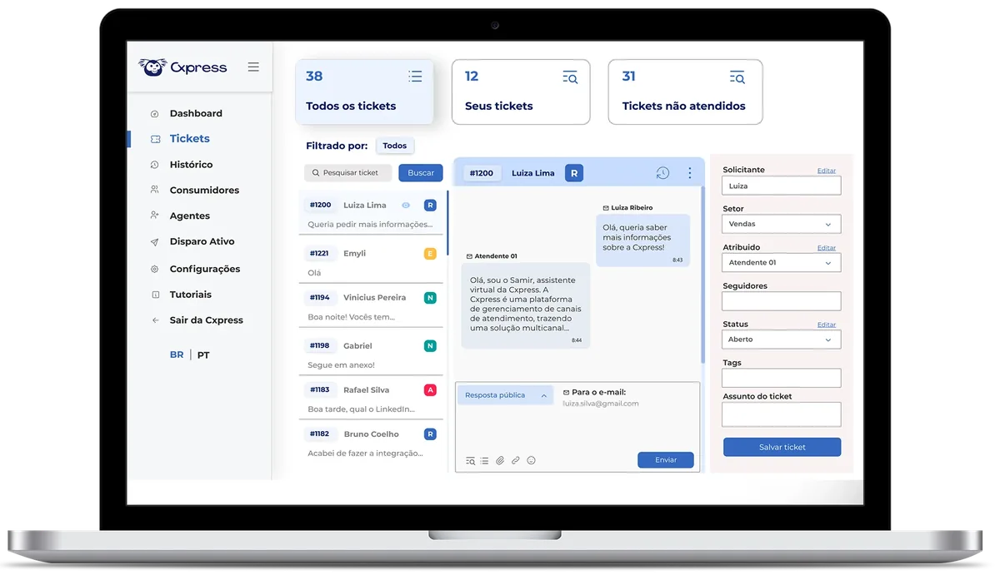

Organize seu atendimento de forma integrada
Centralize as interações de vários canais, otimize a triagem e reduza o volume de atendimentos, com mais eficiência para a sua equipe.
Falar com um especialistaO melhor custo-benefício do mercado
As principais plataformas já oferecem funcionalidades similares. O que diferencia é o que acontece depois: implementação, suporte e controle da operação.
Conecte-se à Cxpress
Compare o que realmente impacta sua operação no dia a dia.
| Critério |
|
ZNV | ZDK | OCD | CHG |
|---|---|---|---|---|---|
| Canais de atendimento (WhatsApp, Instagram, e-mail, telefone, webchat) | Totalmente integrados | Sim | Sim | Não | Limitado |
| Custo-benefício | Excelente | Razoável | Alto custo | Razoável | Razoável |
| Tempo de resposta do suporte | Ágil | Variável | Lento | Rápido | Limitado |
| Suporte local dedicado e rápido em português | Próximo e resolutivo | Lento | Técnico | Básico | Limitado |
| Onboarding e implementação | Guiado e estruturado | Complexo | Técnico | Básico | Básico |
| Clareza de configuração | Transparente | Limitado | Técnico | Básico | Limitado |
| Facilidade de uso | Intuitivo | Sim | Técnico | Sim | Sim |
| Automação e Agente Inteligente com IA | IA + humano | Sim | Sim | Sim | Básico |
Comparativo qualitativo elaborado pela Cxpress. Concorrentes identificados por siglas.
Se todas as plataformas fazem o básico, a diferença está em quem faz sua operação funcionar melhor.
Elimine riscos
Centralize WhatsApp, redes sociais, webchat, e-mail e voz, organize seus atendimentos e automatize respostas, tudo com a Cxpress.
Centralize as interações de vários canais, otimize a triagem e reduza o volume de atendimentos, com mais eficiência para a sua equipe.
Falar com um especialistaAmplie seu atendimento para 24/7 com Inteligência Artificial que responde ao primeiro contato de visitantes e clientes usando linguagem natural.
Falar com um especialista
Tenha uma visão completa e integrada do seu cliente, centralizando interações de diferentes canais em um único histórico.
Falar com um especialista
Distribua tickets (registros) de atendimento automaticamente ou manualmente para setores e agentes específicos, simplificando seus processos.
Falar com um especialistaDeixe as planilhas para trás. Transforme suas estatísticas de atendimento em painéis intuitivos.
Falar com um especialistaMais de 800 clientes confiam em nós


O plano Basic começa em R$ 1.750 por mês e traz a plataforma completa com 5 acessos de operador. Operações maiores montam o Enterprise item a item, com canais, agentes de IA e equipe conforme o desenho da operação. Os detalhes estão na página de planos.
WhatsApp com API Oficial da Meta, Instagram, Facebook, webchat do site, e-mail e telefone, todos no mesmo painel e com histórico unificado por cliente.
Não. A IA responde o primeiro contato em linguagem natural e passa a conversa para a pessoa certa quando o caso pede, com histórico e contexto preservados.
O onboarding é guiado. O time da Cxpress configura canais, filas e agentes junto com a sua operação, e o cronograma sai no diagnóstico inicial.
Sim. A Cxpress é um produto da Elife, com time no Brasil e atendimento em português.
Sim. A plataforma opera no Brasil, na América Latina e em Portugal.
Preencha o formulário e um especialista monta a proposta com os canais, os acessos e os agentes de IA que a sua operação pede. Se preferir, fale agora pelo WhatsApp.
Preencha os dados e continue a conversa com um especialista no WhatsApp.
Pedido enviado. Abrimos a conversa com um especialista numa nova aba. Se ela não abriu, toque aqui.
Carregando o formulário…